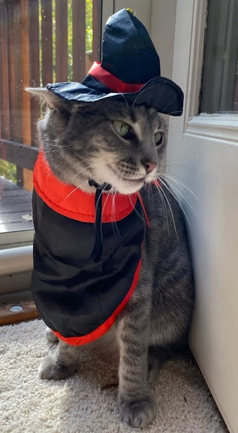
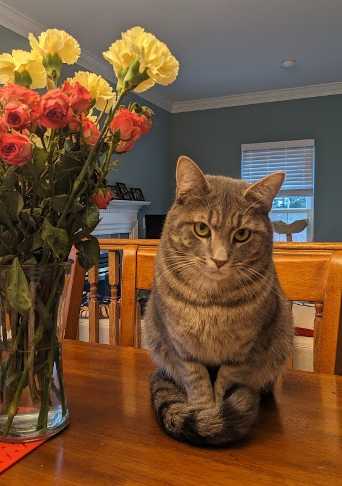
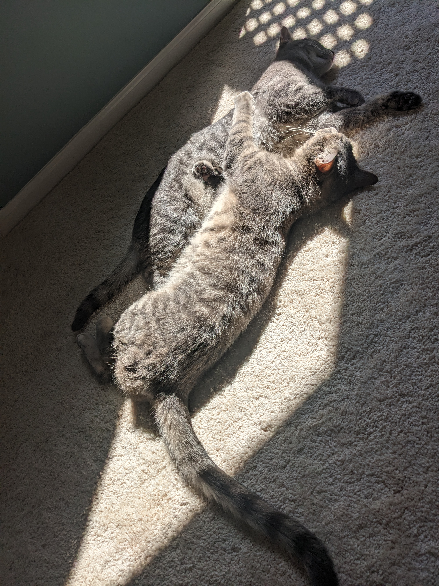
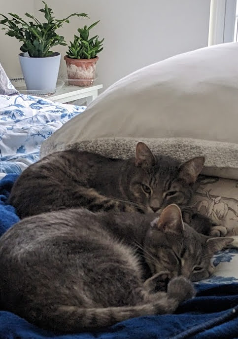
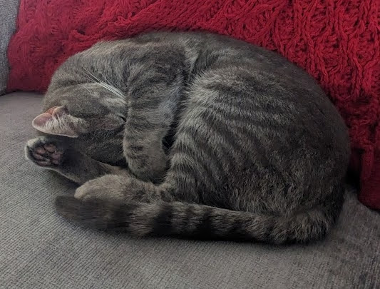
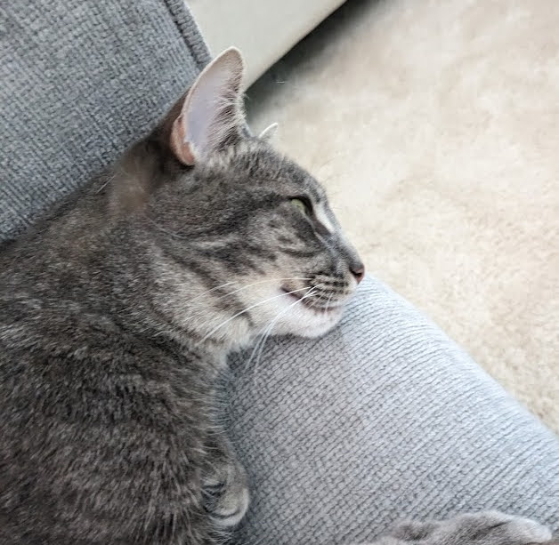
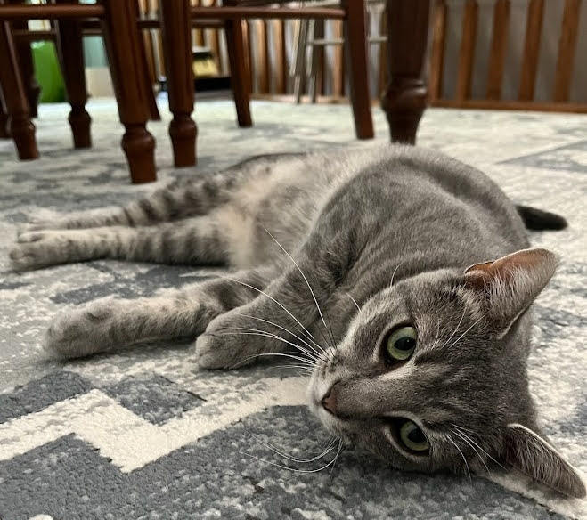

Carrie & Cardamom - the gray tabby duo

Carrie's debut as a vampire

Cardamom's debut - a little shy

Together, soaking up the sun

In fact, most of their time is tranquil

Sometimes, the light is too much

Cats enjoy a lazy Sunday, too

It's not that she's the favorite, just very photogenic